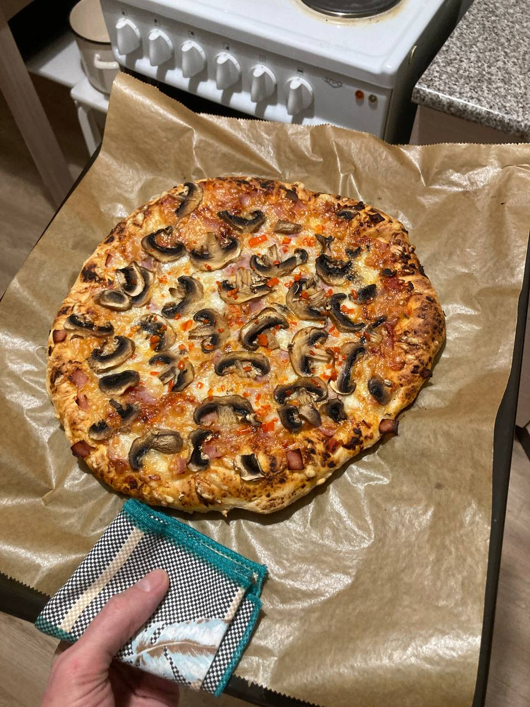

Pepperoni Pizza
Home

Homemade pepperoni, assembled from various recipes found online
Ingredients
- Flour
- Dry Yeast
- Sugar
- Salt
- Sunflower Oil
- Regular Cheese
- Mozzarella
- Tomatoes
- Chili Pepper
- Garlic
- Boiled Sausage
- Mashroom/li>
- Dried Italian and/or Provencal herbs
- Semolina
Steps
- Mix the yeast, salt, and sugar in warm water just above body temperature and let it sit for 10 minutes.
- Add the flour and begin mixing until the dough is moist but no longer sticky. Then place it in a bowl and cover.
- While the dough is sitting, score the tomatoes, scald them with boiling water, and peel them. Slice them and place them in a frying pan, add sunflower oil and spices, and simmer over low heat.
- Chop the chili and divide into three parts. Add the first part now.
- Finely chop the garlic clove and add it to the tomatoes. Stir until the mixture is almost completely dry.
- Remove the baking sheet, sprinkle it with a pinch of semolina, and pour the dough onto it. Begin to flatten it with your fingers until the center is thin and the edges are slightly wider.
- Spread the resulting tomato paste over the dough, grate the cheese, add the remaining chili, and top with thinly sliced sausage and mashroom.
- Place the pizza pan in a preheated oven at 250 degrees Celsius and bake for 5-8 minutes. Then, add the remaining chili and let cool slightly.